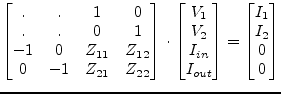
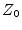

As the MNA matrix is the y-parameter matrix of the whole circuit, components that are defined by y-parameters can be easily inserted by adding these parameters to the MNA matrix elements (so-called 'stamping').
Components that cannot be defined by y-parameters need to add additional columns and rows to the MNA matrix. Components defined by z-parameters can be added in the following way (example for a 2-port). It is easily extendable for any port number.
|  | (9.1) |
Components that are characterized by S-parameters (normalized to ) can be put into the MNA matrix by the following scheme (example for a 3-port). It is easily extendable for any port number.